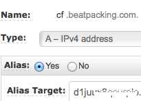

How to optimise cost in Startup with Spot Instances?
JAWS DAYS 2016
Minyoung Jeong(鄭敏泳) / Dohyun Jung(鄭道鉉)
発表者の紹介

Minyoung Jeong(鄭敏泳)
CTO, The Beatpacking Company
Founder, AWSKRUG
AWS Community Hero
Love Python, Ruby
TBD
TBD
오늘 다루는 부분
한국 사용자 모임 소개
한국에서 Tokyo Region 사용하기
어떻게 좀 더 저렴하게 사용할 것인가
アマゾンウェブサービス 韓国ユーザ会
AWSKRUG
Tokyo Region 設立後、韓国からもAWSについて関心が 高まり始め、 2011年 11月 IRCから活動開始
2012年 2月フェースグックグループを開設後、 2016年3月現在、およそ 6,700人の会員が活動中
2015年 11月 Seoul Region ランチングで盛り上がり中！
重要活動
セミナー開催
re:Invent reCap
年 3~4回に会員発表セミナー開催
勉強会サポート
AWSに関心が高まり入門者急上昇中！
主に入門者向けの勉強家を開き、AWSクレジットなどをサポート
DevDay
AWS Koreaと一緒に開く技術セミナー
AWS 新製品紹介、ベスト・プラクティスの紹介など
awskr.org
BEAT
Ad-Supported Radio
대한민국 최초
2014년 4월 Tokyo Region에서 런칭
660만 가입자, DAU 40만, MAU 160만
Series B
아쉽게도 아직 일본에서는 불가T_T
미리 하는 Q&A
왜 일본을 선택하였나?
AWS를 쓰고 싶었어요!
당시 한국은 Co-location 기반의 서비스가 대부분
API를 통한 자동화된 관리와 여러 서비스를 원했기 때문에 결정
미리 하는 Q&A
Tokyo Region에서 서비스 하는데 문제 없었나?
일반적으로, 한국<->일본 Latency는 50~80ms 정도
보통의 Mobile App에서 허용 가능한 Latency
좀 더 나은 사용자 경험을 위해, HTTP KeepAlive, GZip등 활용

2015. 01. 26 CloudFront Edge Launch
Cloudfront 적극 활용
Static resouce외에도 필요시 API도 Cloudfront를 통해 제공
Cloudfront & S3를 통해 관리되는 Network으로 컨텐츠 전송

Cloudfront edge는 Seoul에 있지만 Route53 edge는 없음
CNAME 대신 ALIAS 활용
하지만....
일본은 유명 서비스들(Twitter, Facebook 등)의 한국 서비스 거점
인터넷 피크 시간(PM 10~AM 01)에 해저케이블 대역폭 이슈
다행히, AWSKR이 한국 ISP들과 협력하여 네트워크 경로 관리
2016년 현재, 상당히 준수하게 관리되는 중
미리 하는 Q&A
Seoul Region으로 옮길 계획?
한국에서 Seoul Region과의 Latency는 <10ms
ap-northeast-1 <-> ap-northeast-2간 관리되는 네트워크
BEAT에서 필수적으로 쓰는 서비스 일부가 준비중
특히 Spot Instance가 부재
Tokyo와 병행하여 사용 예정
일부 API, Cache등의 기능 확장 예정
BEATが考えたAWS利用の原則
適切な規模のリソースを利用する
必要最低限のリソースのみ利用する
必要最低限のリソースのみ利用する。
AutoScale + Spot Instance
EC2コストダウンの切り札Spot Instance

EC2の遊休資源をAvailability Zoneことのオークションを通じて利用
オークションを通じて利用するため、
インスタンスのライフサイクルを
任意で統制できない
ただし、On-Demand対比最大90%水準まで安価で利用可能
入札(Bid)戦力
どう入札すれば一番効率的なのか？

Availability Zoneごとに値段が異なる

Instance Typeごとに値段が異なる
특히, ap-northeast-1でどう入札すればいいのか？

特定Spikeを除いたらOn-Demandより安価で利用できる
BEATでは、On-Demand価格の100%で入札
入札価は最高価格なので、その時点の最低価で落札
公開したくないけと…(^^)
実はTokyoリージョンのSpot Instanceは競争が激しくない
今までは活用の幅がかなり広い
Spotがなかったら？
競売の価格が高すぎるか、遊休資源がない場合
Spot Instanceの確保ができない
安定的なサービス運営のためにこの場合どうすればよいのか?
AutoScale + Spot Instance
一つのELBに２個のAutoscale groupを運営
各グループはOn-Demand(RI)とSpot Instanceで設定される
CPUまたはLatencyを基準にてScale In/Out
On-Demand Groupは早いScale-In、遅いScale-Out
Spot Groupは早いScale-Out、遅いScale-In
CPU 基準
| Scale-In | Scale-Out | |
|---|---|---|
| Spot | 20%/1hr | 40%/5min |
| On-Demand | 40%/10min | 80%/5min |

時間帯別Traffic

Traffic最低点対比5~10%程をOn-Deamnd

他の部分を5~10%程度余裕でSpot Instance

もし、必要な分のSpot Instanceの確保が出来なかった場合

Scaling PolicyによってOn-DeamndがScale-Out
Scheduled Policy
サービスTraffic patternによって、
時間帯別にMinimumを調整
Peak時間帯のSpot: 40~ On-Deamdn: 10~
Off時間帯のSpot: 10~ On-Deamnd: 2~

または, 毎日Peak開始前に事前Warm-Upで利用
Wrap Up
- 適切なInstance Typeを利用
- 同じEC2の利用でもコストパフォマンスを考慮
- AutoScalingを通じた積極的にSpot-Instanceを使用
ありがとうございます!
- Q&A
- AWSKRUG
- kkungkkung @ gmail.com
Backup Slides
적절한 규모의 자원을 이용한다
EC2 Instance들의 가격폭은 800배
적절한 Instance Type을 선택하는 것이 매우 중요.
Class (t,m,c,g,r,i,d) 특성 차이
웹서버와, Cache 서버, DB서버에 적절한 인스턴스가 다름
가급적 항상 최신 세대를 사용하는게 가격:성능에 유리
단, C3/C4, M3/M4의 경우 한가지 추가 고려 사항
Instance-Storage vs EBS
C/M의 경우 3세대까지는 Instance-Storage가
제공되지만,
4세대 부터는 EBS만 제공됨
3세대에 제공되는 Instance-Storage는 1~2개의 SSD
Instance-Storage는 EBS 대비 7~10배의 성능 우수
영속성이 없는 대신 성능과 비용이 우수
복제등으로 보완할 수 있는 경우,
I/O 성능이 중요하다면 3세대 사용 고려

T2 Instance
Burst가 없거나, 혹은 예측가능하게 있는 서비스에 적용
CloudWatch등을 통한 CPU 사용률의 관측으로 적절한 T2 Instance로 전환시, 2~30%수준의 비용 절감 가능
특히 M3/M4 Instance에 대해 중점 검토
Lambda
Image Resize, Encoding 같은 작업은 Instance가 항상 대기할 필요가 없는 작업
Lambda는 100ms 단위로 과금하기 때문에 필요시에만 운영하여 비용 대폭 감소